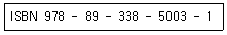
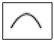
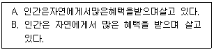
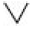

전자출판기능사 (2016-07-10 기출문제)
1과목: 출판론
1. 출판 VAN 구축이 출판업계에 미치는 영향에 대한 설명으로 틀린 것은?
- 고립 분산된 출판사나 독자 간의 정보 연결성을 높여 준다.
- 출판업계의 효율적인 경영체계 확립이 이루어진다.
- 출판 유통의 현대화를 촉진시킨다.
- 업무의 다양화, 유통 기간의 연장으로 유통 비용이 늘어난다.
(정답률: 79%)

2. 다음 중 출판의 기능에 관한 설명으로 옳지 않은 것은?
- 출판은 환경 감시 기능으로 사건, 상황에 대한 정보를 제공한다.
- 영화, 텔레비전 등의 영상매체의 등장으로 출판물은 오락수단으로서의 기능을 상실했다.
- 출판매체는 다른 매체에 비해 생명력이 길며, 문화를 창조하고 전달하고 보존하는데 유리하다.
- 사회적, 문화적 유산의 전달기능으로서 지배적인 문화를 드러냄과 동시에 하위문화나 새로운 문화의 발전을 인식시킨다.
(정답률: 79%)
3. 양장 제책에서 책등의 형태가 아닌 것은?
- Round Back
- Tight Back
- Hollow Back
- Flexible Back
(정답률: 39%)
4. 손목시계의 글자판이나 컴퓨터의 키보드판에 인쇄하고자 할 때 적합한 인쇄방식은?
- 패드인쇄
- 액정인쇄
- 앰플인쇄
- 식모인쇄
(정답률: 62%)
5. 다음 중 볼록판 인쇄의 특징으로 옳은 것은?
- 축임물을 사용
- 인쇄판면이 동일
- 뚜렷한 화상 재현
- 물과 기름의 반발작용 원리를 이용하여 인쇄
(정답률: 60%)
6. 지형(紙型)에 납 합금을 부어 주조한 복제판을 무엇이라 하는가?
- 연판
- 감광성 수지판
- 활판
- 플라스틱 성형판
(정답률: 48%)
7. 스크린 인쇄의 간접사진제판법에서 필름 현상 후 핀 홀이 생기는 원인으로 가장 거리가 먼 것은?
- 노출 부족
- 노출 과다
- 스크린사의 오염
- 먼지에 의한 필름의 오염
(정답률: 55%)
8. 다음과 같은 국제표준도서 번호의 구조에서 89번이 의미하는 것은?(관련 규정 개정전 문제로 여기서는 기존 정답인 1번을 누르면 정답 처리됩니다. 자세한 내용은 해설을 참고하세요.)

- 국별 번호
- 발행자 번호
- 체크 기호
- 서명식별 번호
(정답률: 75%)
9. 일반적인 일간신문과 잡지를 구분하는 형태상의 방법은?
- 색도의 수
- 판형의 크기
- 제책의 여부
- 분량의 차이
(정답률: 60%)
10. 출판기획은 특정한 출판물을 만들어 내기 위한 최초의 의도적 과정으로써 어떤 유형의 출판물을 낼 것인가를 사전에 설계하는 작업이다. 다음 중 가장 먼저 해야 할 일은?
- 원고를 얻는 일
- 제작비를 산출하는 일
- 영업·판매방법을 계획하는 일
- 기획안을 작성하여 필자를 선정하는 일
(정답률: 82%)
11. 기획자가 출판기획서 작성 시 포함하여야 할 내용과 가장 거리가 먼 것은?
- 기획 취지
- 보급 대상
- 판매 전략
- 편집 디자인의 세부 구성
(정답률: 68%)
12. 일반적인 스크린 제판방식 중 감광 제판법에 |해당되지 않는 것은?
- 직접법
- 직간법
- 전사법
- 간접법
(정답률: 50%)
13. 단간에 대한 설명으로 가장 거리가 먼 것은?
- 단간의 설정 목적은 글 읽기에서 옆단의 간섭을 방지하기 위함이다.
- 일반적으로 단간은 5~10㎜ 정도로 본문 2자분 이상 정도이다.
- 인위적인 구분을 위해서 단간에 가는 선을 넣어서는 안 된다.
- 본문의 서체 크기가 크면 넓게 설정하고 작으면 좁게 설정한다.
(정답률: 64%)
14. 다음 책의 본문에 사용되는 종이에 대한 설명 중 틀린 것은?
- 오래 보존될 수 있는 제품을 사용한다.
- 눈이 부실정도로 광택이 많은 제품을 사용한다.
- 불투명도가 좋은 제품을 사용한다.
- 인쇄적성이 좋은 제품을 사용한다.
(정답률: 87%)
15. 우리나라에서 발견된 세계에서 가장 오래된 목판 인쇄물은?
- 팔만대장경
- 직지심체요절
- 고금상정예문
- 무구정광대다라니경
(정답률: 71%)
16. 다음 중 인쇄의 정의를 가장 올바르게 나타낸 것은?
- 인쇄는 휴대가 간편하고, 재생을 빠르게 할 수 있는 대중매체이다.
- 인쇄는 지식과 정보를 보존하기 위한 목적으로만 생산하는 수단이다.
- 인쇄는 정보를 가장 빠르게 전파할 수 있는 매체로써 대량 생산이 가능하다.
- 지식과 정보를 대량으로 값싸고 정확하게 전달, 보존하는 역할을 하는 것이다.
(정답률: 68%)
17. 다음 조건을 이용한 단행본 출간 시 예상되는 손익분기점 매출액은? (단, 인건비 400만 원, 제작비 1,000만 원, 예상매출액 2,000만 원)
- 1,000만 원
- 800만 원
- 600만 원
- 400만 원
(정답률: 42%)
18. 다음 중 출판에 관한 설명으로 옳지 않은 것은?
- 모든 출판물은 영리를 목적으로 한다.
- 목적상으로 영리 출판과 비영리 출판으로 나뉜다.
- 표지의 형태상으로 하드 커버와 소프트 커버로 나뉜다.
- 대중용 출판, 전문출판, 일반도서 출판 등 여러 가지 분류법이 있다.
(정답률: 85%)
19. 양장 제책 공정에서 실로 엮은 책등을 압축시키거나 나무망치로 두드려서 균일한 두께로 만드는 작업은?
- 등 글기
- 등 굳힘
- 고르기
- 등 굴리기
(정답률: 63%)
20. 주간지 등에서 많이 이용하는 방법으로 속장에 표지를 대고 펼쳐놓은 다음에 한 가운데를 실이나 철사를 매어 표지와 함께 다듬재단 하는 제본방식은?
- 중철 제본
- 호부장 제본
- 반양장 제본
- 무선철 제본
(정답률: 64%)
2과목: 전자 출판
21. 다음 중 하이퍼링크에 대하여 가장 올바르게 설명한 것은?
- 하이퍼링크에 의한 정보는 순차적이며, 하이퍼텍스트란 독자가 정보를 순차적으로 검색해보는 기능을 말한다.
- 하이퍼링크는 텍스트를 검색하는 기능만을 수행한다.
- 하이퍼링크는 독자와 정보 사이에 원활한 상호작용을 제공한다.
- 하이퍼텍스트라는 용어는 마샬 맥루한에 의해 1999년에 처음으로 사용되었다.
(정답률: 71%)
22. 다음 중 전자출판의 정의로 옳은 것은?
- 전자출판은 데이터를 검색하는 것이다.
- 전통적인 출판과정의 전부다.
- 컴퓨터나 전자매체를 이용하여 출판하는 것이다.
- 사진식자기를 이용하여 출판을 하는 것이다.
(정답률: 84%)
23. 키보드나 마우스를 사용하여 메뉴나 아이콘을 선택하면 그것이 수행되는 사용자 인터페이스 방식은?
- GUI
- CAD
- FTP
- ISSN
(정답률: 74%)
24. 다음 중 전자출판 시스템의 구성요소로 가장 거리가 먼 것은?
- RIP
- 중형카메라
- OPI 서버
- 이미지세터
(정답률: 73%)
25. 단행본의 분류 방법에 해당되지 않는 것은?
- 발행 목적
- 영업성 유무
- 독자대상
- 판매량
(정답률: 58%)
26. 스캔 받은 이미지를 필요한 부분만 남기고 잘라 버리는 이미지 보정 기법은?
- 크로핑
- 망점 흐리기
- 크기 조절
- 노이즈 제거
(정답률: 79%)
27. 다음 중 전자출판시스템에 관한 설명으로 가장 거리가 먼 것은?
- 출판물을 제작하기 위한 모든 전자기기를 말한다.
- 컴퓨터와 주변기기를 사용하여 원고의 입력, 편집, 출력 제판 등의 인쇄작업 직전까지 인쇄용 원고를 만드는 작업을 말한다.
- 전자출판시스템은 DTP시스템 등의 용어로 불리기도 한다.
- 전자출판시스템을 임포지션 레이아웃이라고도 한다.
(정답률: 49%)
28. 다음 중 이미지파일 포맷이 아닌 것은?
- PCX
- TIFF
- GIF
- MPEG
(정답률: 60%)
29. DTP에 대한 용어를 가장 바르게 나타낸 것은?
- Desk Top Publishing
- Desk Tower Publishing
- Document Top Publishing
- Document To Publishing
(정답률: 70%)
30. 다음 중 일반적인 DTP의 작업 과정을 가장 올바르게 나열한 것은?
- 원고확보→편집설계→편집작업→프린트교정→편집완료
- 편집설계→원고확보→편집작업→프린트교정→편집완료
- 출판기획→원고확보→프린트교정→편집작업→편집완료
- 원고확보→출판기획→편집작업→편집완료→출력의뢰
(정답률: 38%)
31. 다음 중 출판물 판매의 특징에 관한 설명으로 틀린 것은?
- 정가가 바로 최종가격인 것이 특색이다.
- 시장조사가 어려운 상품이며, 수요예측이 곤란하다.
- 서점과의 합의로 일정량을 항상 보관하도록 상비 임치제도를 운영한다.
- 유통업자의 의존도가 낮고, 판매의 위험부담은 출판사가 진다
(정답률: 49%)
32. 전자책(e- Book)의 특성을 설명한 것으로 옳지 않은 것은?
- 인터넷을 통하여 PC 모니터 화면이나 전용·단말기로 책을 볼 수 있다.
- 읽는 장치가 필요하다.
- 멀티미디어 구현이 가능하다.
- 책의 내용에 관계없이 제작비가 일정하므로 인세율을 정하기가 쉽다.
(정답률: 79%)
33. 종이 인쇄출판과는 달리 다양한 정보를 디지털 신호로 변환하여 별도의 미디어에 저장하여 출판하는 대표적인 전자출판 유형은?
- DTP출판
- 패키지형 전자출판
- RIP
- CTP 전자출판
(정답률: 45%)
34. 전자출판을 통해 만든 출판물과 가장 거리가 먼 것은?
- DTP를 이용해서 만든 종이책
- 최신의 유행가를 모아 만든 음악 CD
- HTML을 이용해서 만든 화면책
- 종이책을 PDF로 만든 e-Book
(정답률: 70%)
35. 다음 중 인터넷을 통한 전자출판물의 유통 특성을 설명한 것으로 틀린 것은?
- 전자출판물의 공유가 활발하다.
- 전자출판물의 갱신과 배포가 신속하다.
- 전자출판물 유통의 통제가 쉽다.
- 하이퍼링크 기능을 적극적으로 활용할 수 있다.
(정답률: 75%)
36. CD-ROM 제작 시에 사용되는 스토리보드(Story board)에 관한 설명으로 가장 적절한 것은?
- 일반적인 이야기 전개방식을 말한다.
- 멀티미디어 제작 시 내용을 화면단위로 제시한 구체적인 작업지시서이다.
- 멀티미디어 제작 후 테스트를 하기 위한 작업지시서이다.
- 기획단계에서 만들어지는 개략적인 작업 흐름도(Flowchart)이다.
(정답률: 47%)
37. 전자출판물의 인터페이스(Interface)를 설계할 때의 주의사항으로 옳은 것은?
- 복잡하고 다양한 구조를 갖도록 하여 독자에게 많은 내용이 있는 것처럼 보이게 한다.
- 제작자의 관점에서 설계한다.
- 명료한 구조를 갖도록 하며 사용자 입장에서 설계한다.
- 메뉴의 위치나 아이콘 실행 방식은 변화가 많고 다양하게 설계한다.
(정답률: 79%)
38. 다음 중 인터넷 상에서만 볼 수 있는 전자잡지를 한정해 가리키는 것은?
- WEB MAIL
- WEBZINE
- e-book
- WEB SITE
(정답률: 78%)
39. 출판물의 출력 작업에서 배경 쪽 밑색이 빠진 면적보다 전경 쪽 컬러 면적이 더 크게 또는 작게 처리하는 것은?
- 트랩(Trap)
- 녹아웃(Knockout)
- 인프린트(Inprint)
- 오버프린트(Overprint)
(정답률: 38%)
40. 다음 중 문자코드에 의한 글자표현 방법의 특징으로 틀린 것은?
- 편집, 검색 및 스크롤이 가능하다.
- 데이터 크기가 작고 수정하기 쉽다.
- 표현이 자유롭고, 디자인 결과가 항상 유지된다.
- 사용자의 컴퓨터에 있는 폰트가 아닌 경우 별도로 설치해야 한다.
(정답률: 60%)
3과목: 전산 편집
41. 다음 중 잡지의 특성으로 옳은 것은?
- 통일된 성향의 일관된 목소리를 매 호마다 다른 소재로 커뮤니케이션 한다.
- 발행목적에 따라 학술서, 교양서, 전문서로 구분할 수 있다.
- 한 사람 또는 소수의 집필자에 의해 각 분야별로 일정한 대주제를 서술해 나가는 형식의 책이다.
- 일정 시점에서 단독으로 일정 분량의 내용을 간행하는 서적이다.
(정답률: 53%)
42. 다음 중 글자꼴에 대한 설명으로 옳은 것은?
- 정체 : 가늘게 만든 모양의 글자체
- 평체 : 네모반듯한 모양(정사각형)의 글자체
- 사체 : 왼쪽이나 오른쪽으로 기울인 모양의 글자체
- 장체 : 아래 위를 좁혀 납작하게 보이는 모양의 글자체
(정답률: 59%)
43. 한글 기본 서체의 글 구성에서 행간의 기본 값은 채택한 본문 글자의 50%이다. 본문의 글씨가 신명조 20pt일 때 행송과 행간 값은?
- 행송 : 25pt, 행간 : 10pt
- 행송 : 30pt, 행간 : 10pt
- 행송 : 30pt, 행간 : 15pt
- 행송 : 25pt, 행간 : 15pt
(정답률: 51%)
44. 본문의 정렬방식 중에서 오른쪽과 왼쪽을 어간 자르기를 하여 글줄의 중간에 중심을 두고 대칭이 되도록 하는 정렬 방식은?
- 왼쪽 맞추기
- 오른쪽 맞추기
- 양쪽 맞추기
- 가운데 맞추기
(정답률: 58%)
45. 색의 3속성에 올바르게 나열한 것은?
- 색상, 명도, 농도
- 색상, 명도, 채도
- 색상, 명도, 대비
- 색상, 명도, 순도
(정답률: 83%)
46. 다음 중 잡지의 레이아웃에 대한 설명으로 가장 거리가 먼 것은?
- 2페이지씩 펼침 페이지 단위로 하는 것이 기본이다.
- 기사마다 정형화된 레이아웃의 통일 패턴을 만드는 것이 좋다.
- 단행본과 비교하여 레이아웃이 매우 자유로운 편이다.
- 하나의 기사 가운데서도 단수를 자유롭게 변경하여 사용하는 것이 좋다.
(정답률: 44%)
47. 색의 채도를 바르게 표현한 것은?
- 색의 밝고 어두운 정도
- 색의 선명한 정도
- 색의 밝기를 단계적으로 나타낸 것
- 색상의 분포도를 나타낸 것
(정답률: 72%)
48. 다음 교정부호에 대한 의미로 옳은 것은?

- 별행으로
- 자간 넓히기
- 순서 바꾸기
- 자간 좁히기
(정답률: 72%)
49. 타이포그라피의 발전과정에 대한 설명으로 틀린 것은?
- 윌리암 모리스의 활자 디자인은 아르누보에 영향을 주었다.
- 다다이즘, 데스틸, 바우하우스에 의해서 타이포그라피의 기반이 구축되었다.
- 컴퓨터의 출현으로 활판 인쇄술의 발전과 새로운 타이포그라피 스타일이 등장하였다.
- 마이어, 모흘리 나기, 얀치홀트에 의해서 타이포그라피의 근대화기반이 되었다.
(정답률: 41%)
50. 다음 중 한 장의 사진을 여러 번 사용함으로써 얻는 효과가 아닌 것은?
- 사진의 모서리를 겹치고 사진의 크기를 증가시키면 정적인 느낌을 준다.
- 사진을 작은 요소들로 나누어서 일렬로 배치하면 장면들의 점차적인 변화를 보여줄 수 있다
- 사진을 위 또는 아래로 대칭시켜 심리적으로 반사되는 착각을 일으킨다.
- 같은 사진을 점차 크거나 작게 만든 다음에 배치시켜 성장이나 침몰을 나타낸다.
(정답률: 63%)
51. 가법 혼합에서 빨강(Red)과 파랑(Blue) 원색을 혼합하였을 때 나타나는 색으로 옳은 것은?
- 파랑
- 마젠타
- 하양
- 노랑
(정답률: 72%)
52. 다음 중 메타메리즘(metamerism)에 관한 설명으로 옳은 것은?
- 아이소메릭 매칭이라 한다.
- 다양한 파장에서 특정한 램프에 의해 방출된 상대적인 에너지를 말한다.
- 특정한 관측조건하에서 분광 분포가 다른 두 색자극이 같게 보이는 것을 말한다.
- 가상색이기에 조건이 같은 상황에서 색이 달라져 보인다.
(정답률: 54%)
53. 다음 A문장을 B문장으로 정정할 때 사용되는 교정 부호는?


(정답률: 79%)
54. 전산 편집한 팜플렛을 프린터로 출력해 본 결과 편집에 사용된 그림에 심한 모자이크 현상이 나타났다. 그 원인으로 가장 옳은 것은?
- 그림의 해상도가 너무 높기 때문이다.
- 그림의 해상도가 너무 낮기 때문이다.
- 그림의 형식이 CMYK 모드이기 때문이다.
- 그림의 형식이 RGB 모드이기 때문이다.
(정답률: 78%)
55. 다음 중 올바른 교정 방법으로 가장 거리가 먼 것은?
- 교정은 반드시 붉은색으로만 표시해야 한다.
- 규정은 부호를 정확하게 표시한다.
- 교정쇄는 깨끗하게 다루고 취급한다.
- 유사한 부호나 글자는 피교정자가 쉽게 알아 볼 수 있도록 표시를 한다.
(정답률: 71%)
56. 편집에서 여백에 대한 설명으로 옳지 않은 것은?(오류 신고가 접수된 문제입니다. 반드시 정답과 해설을 확인하시기 바랍니다.)
- 지면에서의 여백이란 전혀 인쇄되지 않은 부분을 말한다.
- 성인용 서적에서는 여백을 최대한 줄여서 가급적 많은 문자와 사진 등을 넣어야 효과적인 메시지 전달이 된다.
- 여백을 활용하는 편집은 잡지나 신문뿐만 아니라 광고에서도 효과적일 수 있다.
- 문자를 지면에 넣다 보니 여백이 남는다고 해서 그곳에 사진이나 일러스트레이션을 채워 넣는 식의 레이아웃은 가급적 지향한다.
(정답률: 65%)
57. 출력 선수(lpi)와 해상도(dpi)에 대한 설명 중 틀 린 것은?
- 같은 해상도라도 출력기의 특성이나 출력되는 형태, 어떤 용지에 출력하느냐에 따라 다소차이가 있다.
- 선수를 무조건 높인다고 해서 출력 결과가 좋아지는 것은 아니다.
- 보통 흑백 인쇄물은 60선, 신문은 130선, 고급화보는 133선을 사용하는 것이 일반적이다.
- 선수를 높여 망점을 작게 하면 잉크가 번져 망점이 겹치게 되고 출력물이 어둡게 나오는 경우가 있다.
(정답률: 51%)
58. 다음 중 DTP 프로그램의 도큐먼트에 들어갈 수 있는 아트웍 파일로 구성되어 있으며 독자적인 일러스트레이션을 제작하지 않고서도 인쇄물을 제작할 수 있게 하여 많은 시간과 비용을 절약할 수 있는 것은?
- 메이드 아트
- 그림문자
- 장식활자
- 클릭아트
(정답률: 64%)
59. 편집에서 사용되는 선에 대한 설명으로 옳지 않은 것은?
- 자유로운 선은 간결하고 단순하며, 기계적인 선에서는 부드러움이 있다.
- 크기와 서체가 같은 문자도 선을 그으면 주의가 집중된다.
- 본문의 단을 선으로 구분하면 긴장되고 적극적인 느낌을 준다.
- 단을 구분하는 선은 두꺼운 선보다 가는 선이 좋다.
(정답률: 66%)
60. 다음 중 신문 제작 시 CTS의 장점에 대한 설명과 가장 거리가 먼 것은?
- 단위공정의 효율성을 최대한 높일 수 있다.
- 숙련도가 낮더라도 작업을 원활히 진행할 수 있다.
- 대량인쇄 시스템을 효과적으로 지원할 수 있다.
- 기사의 입력, 편집, 인쇄를 온라인화 할 수 있다.
(정답률: 63%)